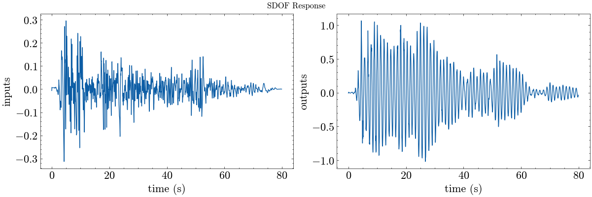

SISO System Identification for Ground Motion Events#
[1]:
import ssid
from ssid import modal, spec
import sdof
import numpy as np
from numpy import linspace, sqrt, pi
from ssid.utilities.config import Config
from ssid.utilities.printing import *
from ssid.numerics import decimate
Unknown system with one input and one output#
parameter |
value |
|---|---|
\(\omega_n\) |
natural period |
\(\zeta\) |
damping ratio |

Configure#
Inputs#
[2]:
inputs = np.loadtxt("uploads/elcentro.txt")
dt = 0.02
# ta = np.arange(0, inputs.size*dt, dt)
t = linspace(0, (inputs.size-1)*dt, len(inputs))
Outputs#
[3]:
outputs = None
[4]:
# Example SDOF system
mass = 1 # mass
k = 30 # stiffness
zeta = 0.01 # damping ratio
Generate output if one was not given:
[5]:
if outputs is None:
omega_n = sqrt(k/mass) # natural frequency (rad/s)
Tn = 2*pi/omega_n # natural periods (s)
c = 2*zeta*mass*omega_n # damping coefficient
print(f"natural period: {Tn:<3.5}s")
print(f"damping ratio: {zeta}")
displ, veloc, outputs = sdof.integrate(mass,c,k,inputs,dt)
natural period: 1.1471s
damping ratio: 0.01
Method#
[6]:
conf = Config()
conf.decimation = 1 # transfer function decimation
Analysis with System Identification#
[7]:
# Set parameters
conf.damping = zeta
conf.period_band = (0.1,3) # Period band (s)
conf.pseudo = True # use pseudo accelerations (Sa)
# A place to store models and their predictions
transfer_models = {}
# Generate a transfer function representation of the system
transfer_models["Fourier Transform"] = spec.fourier_transfer(inputs, outputs, dt, **conf)
transfer_models["Response Spectrum"] = spec.response_transfer(inputs, outputs, dt, **conf)
# Determing the fundamental frequency
fundamental_fourier = modal.spectrum_modes(*transfer_models["Fourier Transform"])
fundamental_response = modal.spectrum_modes(*transfer_models["Response Spectrum"])
[10]:
# Generate a state space realization of the system
conf.decimation = 4
conf.r = 2
conf.no = 300
realization = ssid.system(method="okid-era-dc", inputs=inputs, outputs=outputs, **conf)
# Obtain natural period and damping ratio from the state space model
ss_modes = modal.system_modes(realization, dt, **conf)
print_modes(ss_modes, Tn=Tn, zeta=zeta)
plot_transfer(transfer_models, title="Transfer Functions")
plt.gcf().axes[0].vlines([fundamental_fourier[0], fundamental_response[0]],ymin=[0,0],ymax=[fundamental_fourier[1],fundamental_response[1]],linestyles='--',colors='k')
plt.gcf().axes[0].vlines(1/ss_modes[next(iter(ss_modes.keys()))]["freq"],ymin=0,ymax=fundamental_fourier[1],linestyles='--',colors='r')
plt.gcf().axes[0].text(fundamental_fourier[0],fundamental_fourier[1],r"$T_{1}$ = "+str(np.round(fundamental_fourier[0][0],3)))
plt.gcf().axes[0].text(fundamental_response[0],fundamental_response[1],r"$T_{1}$ = "+str(np.round(fundamental_response[0][0],3)));
1 1 999
---------------------------------------------------------------------------
AssertionError Traceback (most recent call last)
Cell In[10], line 5
3 conf.r = 2
4 conf.no = 300
----> 5 realization = ssid.system(method="okid-era-dc", inputs=inputs, outputs=outputs, **conf)
6 # Obtain natural period and damping ratio from the state space model
7 ss_modes = modal.system_modes(realization, dt, **conf)
File /mnt/c/Users/cmp/Documents/GitHub/SystemIdentification/src/ssid/system.py:22, in system(inputs, outputs, method, decimation, **options)
20 if method == "okid-era-dc":
21 Y = markov.okid(inputs, outputs, **options)
---> 22 realization = realize.era_dc(Y, **options)
24 if method == "srim":
25 realization = realize.srim(inputs, outputs, **options)
File /mnt/c/Users/cmp/Documents/GitHub/SystemIdentification/src/ssid/realize.py:114, in era_dc(Y, nc, a, b, l, g, **options)
112 H[p*i:p*(i+1), q*j:q*(j+1)] = Y[:,:,i+j+1]
113 H0 = H[:,:q*nc]
--> 114 assert H0.shape == (p*(no), q*(nc))
116 dimR = p*no # Dimension of square correlation matrices
117 dimHRl = (dimR*(a+1), dimR*(b+1)) # Dimension of Hankel matrix of correlation matrices
AssertionError:
[ ]:
assert np.isclose(1/Tn, ss_modes[next(iter(ss_modes.keys()))]["freq"], atol=1e-2), (1/Tn, 1/ss_modes[next(iter(ss_modes.keys()))]["freq"])
assert np.isclose(Tn, fundamental_fourier[0], atol=1e-2)
[ ]:
plot_io(inputs=inputs, outputs=outputs, t=t, title="SDOF Response")

[ ]:
# Reproduce the response with the state space model
from control import ss, forced_response
out_ssid = forced_response(ss(*realization,dt*conf.decimation), U=decimate(inputs,conf.decimation), squeeze=False, return_x=False).outputs
plot_pred(ytrue=decimate(outputs,conf.decimation), models=out_ssid, t=decimate(t,conf.decimation), title="State Space Model Displacement Response")